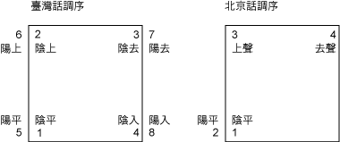

| 第二課 | 聲調 |

| 平，再排上去聲。 |
| 呼八音」時寧可拿「陰上2」來補缺；北京話缺調甚多，排調時完全不 |
| 補缺。 |
| 古八音 | 臺灣話 | 北京話 | 例 字 | |
| 陰平 | 1 | 1 | 車 、獅 、軍 、東 、心 、新 、生 | |
| 陽平 | 5 | 2 | 儂 、猴 、群 、同 、尋 、神 、成 | |
| 陰上 | 2 | 3 | 比 、虎 、滾 、董 、審 、診 、省 | |
| 陽上 | 2/7 | 3/4 | 有 、雨 、厚 、馬 、甚 、腎 、像 | |
| 陰去 | 3 | 4 | 去 、豹 、棍 、凍 、禁 、信 、性 | |
| 陽去 | 7 | 4 | 忌 、路 、郡 、洞 、妗 、慎 、剩 | |
| 陰入 | 4 | 1/2/3/4 | 郭 、鱉 、國 、格 、骨 、谷 、色 | |
| 陽入 | 8[清] | 2 | 拔 、毒 、達 、十 、局 、滑 、狹 | |
| 陽入 | 8[濁] | 4 | 木 、莫 、鹿 、碌 、顎 、玉 、浴 | |